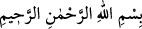
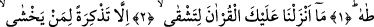
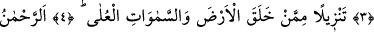
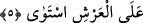

KUR’ÂN’I GÜÇLÜK ÇEKESİN
DİYE İNDİRMEDİK
Rahmân ve Rahîm olan Allâh’ın adıyla.
1. Tâ hâ.
2. Biz sana bu Kur’ân’ı güçlük çekesin diye indirmedik.
3. Ancak korkanlara bir öğüt (olarak indirdik).
4. O, yeri ve yüce gökleri yaratan tarafından peyderpey indirilmiştir.
5. O Rahmân, Arş’ı istivâ etmiştir.
“Tâ hâ” Bu harfler hakkında, diğer mukattaa harflerinde olmadığı kadar ihtilâfa
düşülmüştür. “Tâhâ”nın; Kur’an’ın, sûrenin veya Allâh’ın ismi olduğu ayrıca “Tâhir”
ve “Hâdî” isimlerinin anahtarı olduğu söylenmiştir. Bazı âlimler Ahmed ve Yâsîn gibi,
Tâhâ’nın da Peygambere âid bir isim olduğunu kabul etmiştir. Nitekim Peygamber
Efendimiz: “Ben Muhammed’im, Ben Ahmed’im, Ben el-Fâtih, el-Kâsım, el-Hâşir, el-
Âkıb, el-Mâhî, Tâhâ, ve Yâsin’im.”[52] buyurmuştur. Bu görüşü ikinci âyette geçen
“sana” hitabı da desteklemektedir. Bu durumda, nidâ harfi hazfedilmiş olup “Ey Tâhâ”
takdirinde olur.
Tâhâ’nın “Tâ”sı Peygamberimiz (s.a.)’in insanlar için şefâat etmeye tâlib olduğuna,
“hâ” ise onun insanları hidayete götürdüğüne işarettir. Ya da “tâ” günahlardan tâhir
(temiz) olduğuna, “hâ” ise gaybları çok iyi bilene (Allâh’a) hidâyet eden (hâdî)
olduğuna işarettir.
Kâşifî de şöyle der: “Tâ” onun kalbinin Hak’tan başkasından tâhir/temiz olduğuna,
“hâ” ise onun insanları Hakk’ın yakınlığına hidâyet ettiğine delâlet eder.” İmam Câfer-i
Sâdık (r.a.) “Tâhâ”nın ehl-i beytin tahâretine/temizliğine ve onların doğru yolda
olduklarına yemin olduğunu söylemiştir. Nitekim âyette “Allah sizi tertemiz yapmak
istiyor.” (el-Ahzab, 33/33) buyrulmuştur. Ya da “tâ” tûba, yani cennete, “hâ” hâviye,
yani cehenneme delâlet eder.
Zâdü’l-mesîr’de der ki: “Tâ” Tayyibe’ye (Medîne) ve “hâ” Mekke’ye işârettir. Allah
Teâlâ hürmet edilen bu iki hareme yemin etmiştir. Ya da “tâ” gazilerin cihâdı istemesi,
“hâ” kafirlerin kaçması veya cennet ehlinin cenneti istemesi, cehennem ehlinin